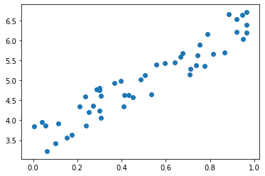
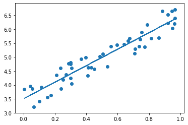
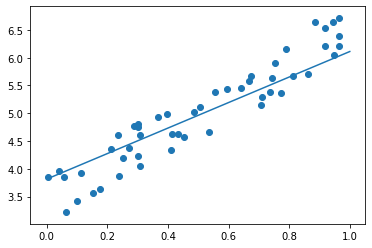

線形回帰
線形回帰(linear regression)とは、目的変数$Y$と説明変数$X$から
$y = f(x)$を与えるような関数$f = X\beta + \epsilon$
を求めることである。
$X$は説明変数のベクトルで、$\beta$は係数のベクトルである。
$\epsilon$は係数である。
線形回帰では、複数の説明変数$x_1, x_2, …$は出てくるが二乗は出てこないことに注意する。
二乗が出てくると一気に難しく、過学習などの恐れが出てくる。
単回帰は説明変数が一つのみの場合であり、今回は単回帰のみをsklearnを用いて実装してみる。
学習方法
線形回帰の学習方法は主に２つ存在する。
- 解析的
- 数値的
である。
解析的はいわゆる中学で何度もやった因数分解のように代数で解く手法である。
一方、数値的は微分を用いて行う。
最小二乗法はモデルとの誤差$e$を求めて、この$e$が最小になるように各係数を調整する。
$\beta_i += -\frac{de}{dx_i} \times \eta$
勾配降下法
上記の勾配降下法において主に３つのアルゴリズムがLiniar Regressionでは利用される。
バッチ勾配降下法
全部のテストデータを使って学習する。
時間がかかる。
確率的勾配降下法
ランダムに取り出して学習することを繰り返す。
速度は早いが不安定
ミニバッチ勾配降下法
ランダムにミニバッチを作って学習する。
高速であり、かつ 安定しやすい。
実装
1 | import mglearn |
np.random.randは(x, y)のように与えられた次元の0~1の行列を返す。
1 | x = np.random.rand(50, 1) |
1 | y = 3 + x * 3 + np.random.rand(50,1) |
scatterで散布図をかける。
1 | plt.scatter(x, y) |

1 | from sklearn.linear_model import LinearRegression |
1 | # ravelは多次元を一次元データ（ベクトル）にする |
1 | pred_y = lin_reg.predict(x) |

1 | # intercept 切片 |
(3.505313728559018, array([2.96289018]))SGDRegressorは数値的に微分してモデルを作る確率的勾配降下法。
一方LinearRegressionは解析的らしい。
1 | from sklearn.linear_model import SGDRegressor |
1 | sgd_reg = SGDRegressor(max_iter=100, eta0=0.01).fit(x, y.ravel()) |
1 | sgd_reg.intercept_, sgd_reg.coef_ |
(array([3.81441589]), array([2.29663001]))1 | new_x = np.array([[0], [1]]) |
おおよそ求めることができている。

Comment